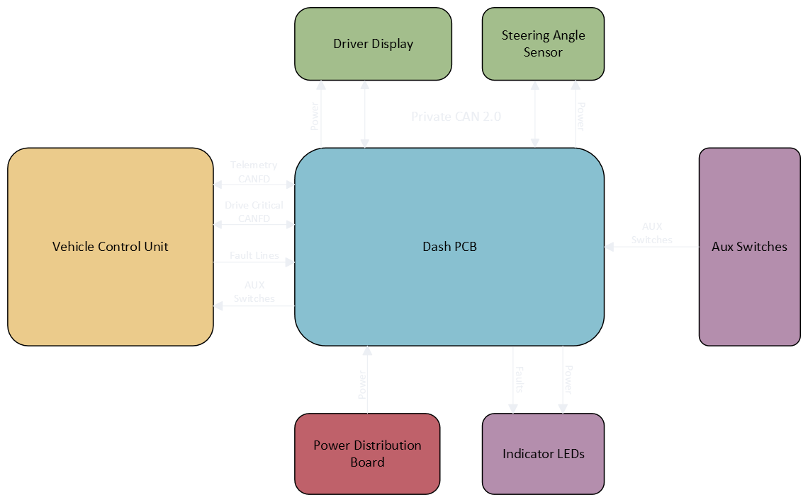

Dash PCB
The Dash PCB was the first project I led on Illini Electric Motorsports. This board was in charge of communicating and providing power to the PLEX, our driver display, as well as handling auxiliary switch inputs and vehicle fault indicators. Since the PLEX operates on standard CAN while the car's buses are on CAN FD, the Dash PCB has to act as a bridge between the two protocols to allow for communication. Later in the year, after we found issues with our steering-angle sensor implementation, the scope of the project expanded to powering and providing private communication to the sensor so that it functioned without impacting the rest of our bus.

System architecture

The dash PCB has to communicate with many different parts of the car. It receives 24 V power from our custom power distribution board and then steps that down to 12 V, 5 V, and 3.3 V with its internal buck converters and LDOs. This power is used both by the internal components, and as outboard power for the SAS (steering-angle sensor) and PLEX display.
The board has 3 CAN transceivers: 2 which communicate with the car's internal buses, and 1 for private CAN to the display. Originally, the private CAN was point-to-point with the PLEX, but since the SAS has a 60 Ω termination inside of it, we moved it off of the main bus and onto my board's private CAN to protect the car-critical buses.
The dash PCB also takes in fault signals from the Safety Board which it uses to switch indicator lights on the Fault LED Buddy Board. It also has 5 auxiliary switches which are wired into the STM, and forwarded over CAN to the safety board to allow the driver to enable the car, cooling, Torque Vectoring, Traction Control, and "Party Mode".


Mechanical integration
The mechanical integration was defined by constantly shifting cockpit and controls packaging requirements. Working with our cockpit and driver ergonomics engineers, I redesigned and re-routed the board to fit the dashboard assembly within the monocoque and accommodate driver requests about interface locations and line of sight.


After the original design was completed, shifts in monocoque design and driver preference necessitated a 20% or more width reduction. By redesigning the layout from the ground up using everything I learned from my first attempts, I was able to increase the serviceability of the board and reduce its footprint by 23% compared with version 1.0.

than version 1.0